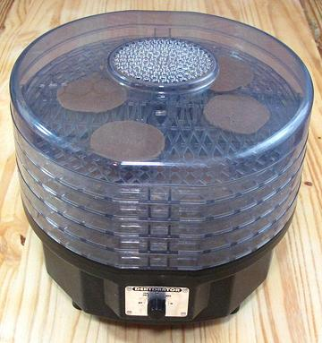

Dehydrator

This is a specialty item that won't be needed in most
kitchens, but is essential for some of us. There are many
dehydrators on the market to serve various needs. I chose this small
Waring electric model for convenience, because my needs are on a fairly
small scale, only occasional, and because it has an adequate number of
trays. I am quite happy with it, but the fan is rather noisy - you don't
want this thing running in your main living space. Some people, of
course, will only settle for a solar dehydrator.
More on Kitchen Equipment.
Buying
Do an on-line search for Dehydrator and you'll
see many choices at many prices. Carefully consider your actual needs,
trying to separate them from fantasy.
Using:
Herbs dry very quickly, which is good because
flavor hasn't time to retreat back into the stems - but be careful not
to overdry. Drying a slab of salted beef will take a day and a half or
more. The Shan Tua Nao fermented soybean disks shown in the photo
above were quite dense, so took overnight at medium heat to be suitably
dry.
ke_dehydz 180318 - www.clovegarden.com
©Andrew Grygus - agryg@clovegarden.com
Photos
on this page not otherwise credited © cg1
- Linking to and non-commercial use of this page permitted